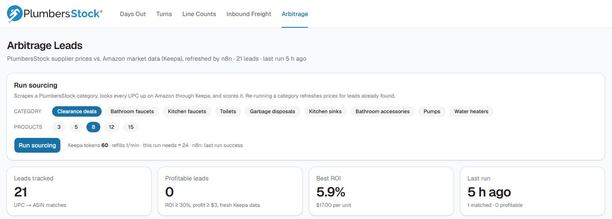
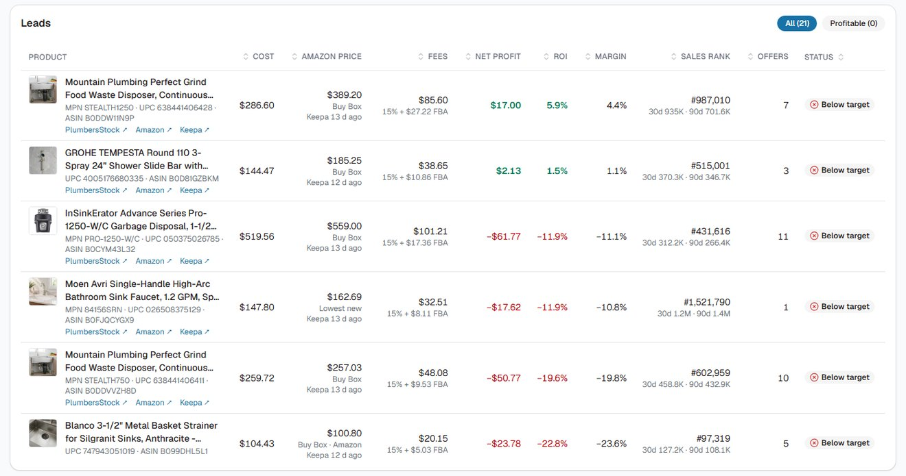
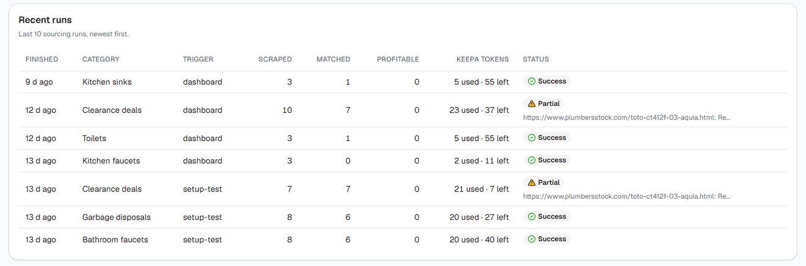
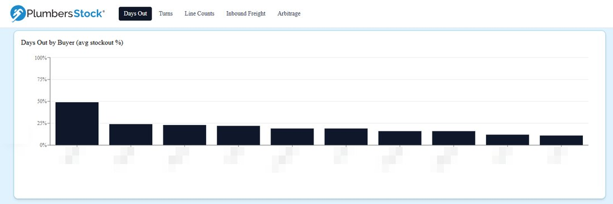
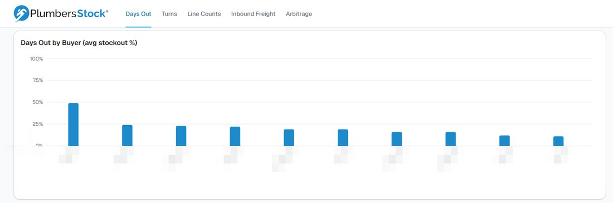
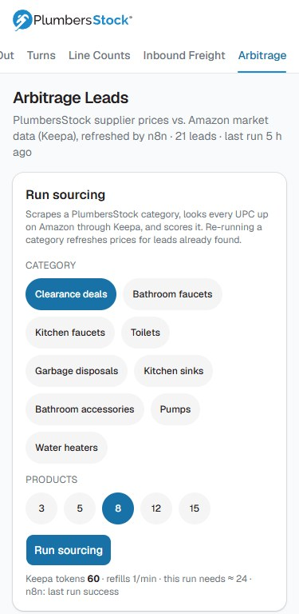

Case study: inventory dashboard for PlumbersStock
An Amazon sourcing engine that rejects fake deals
Which PlumbersStock products could be resold on Amazon at a profit? I built a pipeline that answers that from Keepa market data, with no access to Amazon's seller systems, and added it to the team's inventory dashboard. Then I redesigned the whole dashboard for desktop and phone.
- leads scored
- 21
- fake ROI caught
- 122%
- numbers checked
- 16,033
- Product readUPC, price and stock from a PlumbersStock category
- Matched through KeepaBuy Box, fees, sales rank and competing offers
- Fake deal rejectedStale data can't count as profitable, whatever the ROI says
The arbitrage page
Pick a category, start a run, and every product comes back scored with its fees shown, so the team can see the reasoning as well as the answer.



The question
Resale margin depends on Amazon's fees and on who holds the Buy Box, so comparing two prices gives the wrong answer. The pipeline had to get it right within four limits.
-
No Amazon seller access
Market data comes only from Keepa. There is no Amazon SP-API, Seller Central or AWS access anywhere in the system.
-
Keepa tokens are scarce
The plan refills 1 token a minute, up to 60, and a matched product costs about 3. Every run has to fit that budget.
-
A deal has to survive real fees
Net profit is the Amazon price minus the referral fee, FBA pick and pack, prep and supplier cost. A lead only counts at 30% ROI and $3 profit.
-
Old data can't count
A lead scored on Keepa data more than 7 days old is marked stale and can't be profitable, whatever the numbers say.
How the pipeline works
Six steps, from pressing the button to a scored lead on screen. The middle four run in this n8n workflow.
Swipe sideways to see the whole workflow.
-
Start a run from the dashboard
Choose a category and up to 15 products. The server refuses a run that would overdraw the Keepa balance or overlap one already running.
Next.js, TypeScript
-
Read the supplier catalog
An n8n workflow reads the category page, then each product's structured data: UPC, part number, price and stock. It identifies itself as a bot, fetches one page at a time with a pause, and only accepts approved category URLs.
n8n, JavaScript
-
Match to Amazon with one Keepa call
All the UPCs go into a single bulk request, which returns Amazon's matching listings with Buy Box price, fees, sales rank and offer counts.
Keepa API
-
Clean the data and score each lead
Keepa's placeholder values become blanks, then each lead gets its fees, net profit, ROI, margin and a stale check.
JavaScript in n8n, 10 automated tests
-
Save the lead and log the run
Leads are stored against their UPC and Amazon listing, so running a category again refreshes them instead of creating duplicates. The dashboard watches for the finished run and reloads.
Supabase, Postgres
-
Keep it separate inside the dashboard
The page lives in the inventory dashboard but has its own database and workflow, so it can't affect the inventory data. The browser only gets read access, and every other key stays on the server.
Next.js, TanStack Table, row-level security
What the checks catch
Market data is messy, and a bad number here could mean buying the wrong stock. Automated tests cover each of these.
-
A 122% ROI that wasn't real
Keepa returns its last snapshot for a listing it can't refresh, usually a dead one. One of those showed a 122% ROI. The stale check now stops that kind of lead from counting.
-
Placeholders posing as prices
Keepa uses -1 and -2 for missing values. The pipeline turns them into blanks, so they can't flow into profit and ROI.
-
Running out of tokens
If Keepa refuses a request, the run is logged as an error with the reason and no leads are written.
-
A save that fails
If leads can't be saved to the database, the run is marked as an error instead of being reported as a success.
Redesigning without changing a number
All five pages moved onto one set of shared components, with a phone layout. A redesign can't be allowed to change a purchasing figure, so I captured every number on screen before and after. All 16,033 matched.



Results and limits
The engine works and the answer so far is clear, though it isn't the final one.
What it delivered
- 21 Amazon matches scored, with every fee shown.
- 0 leads clear the target at public list prices. The best returned 5.9% ROI, $17.00 a unit.
- 10 of 10 automated tests passing on the pipeline's code.
- A redesigned five-page dashboard with 16,033 numbers checked and unchanged.
What it doesn't do yet
- Use real buying costs. It works from public list prices, and real cost is the number most likely to change the answer.
- Count inbound shipping, sales tax or storage fees.
- Score more than 15 products a run on the current Keepa plan.
- Recheck old leads on its own. The stale check runs when a lead is scored, so older leads need a new run.
The useful answer was no: at list prices, nothing clears the target. The next test is real buying cost.
Need numbers you can act on?
I build pipelines and dashboards with the checks built in. Book a free 30-minute call, or send me an email.
- raffymcfee@gmail.com
- Location
- Pampanga, Philippines